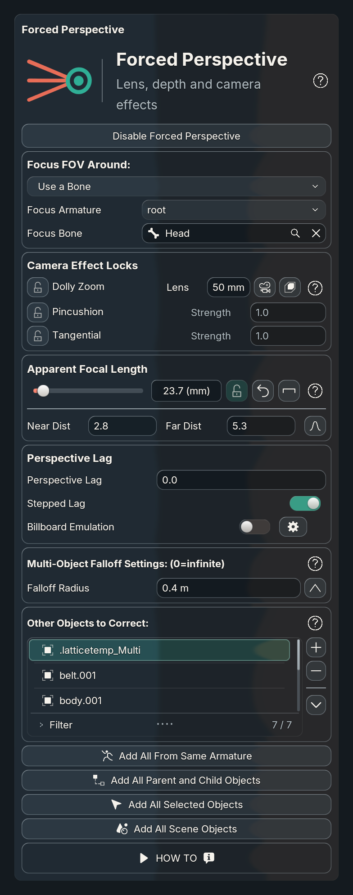
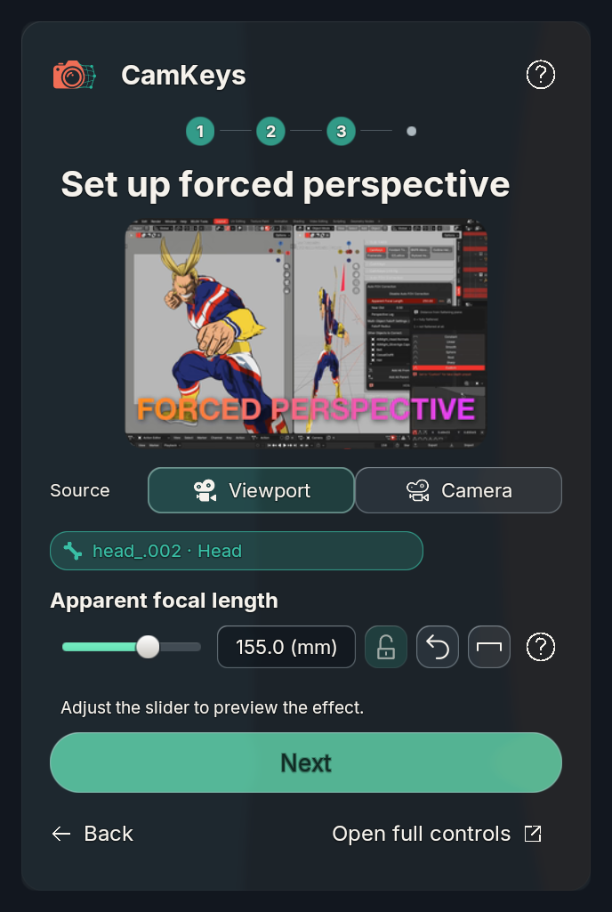

Shared native property bindings with BUI styling: lock/unlock icon, reset, falloff, help. Geometry checks cover 240/320/480 logical widths. Captures use saved Uraraka bindings over controlled real BUI glass; they are not live-sidebar screenshots.


The candidate keeps depth intact and reprojects cross-sections for short or long apparent lenses. It does not guarantee literal volume or curvature preservation. On the isolated 10,242-vertex fixture it measured 0.1235 ms median versus 0.1455 ms for a simplified legacy core. Full Uraraka and asset/version qualification remain pending.
Control behavior · Prototype data and limits · Overview and estimate